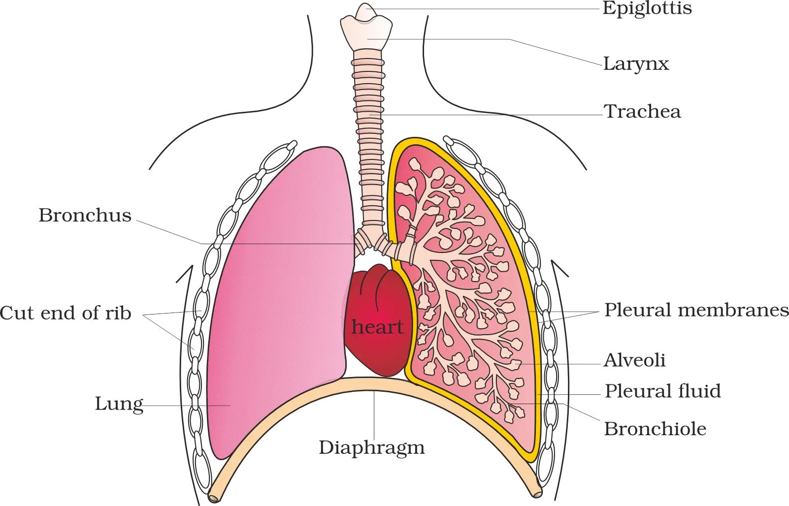
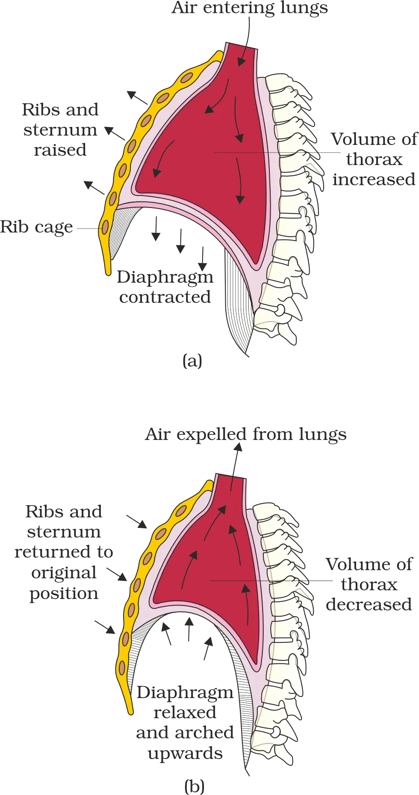
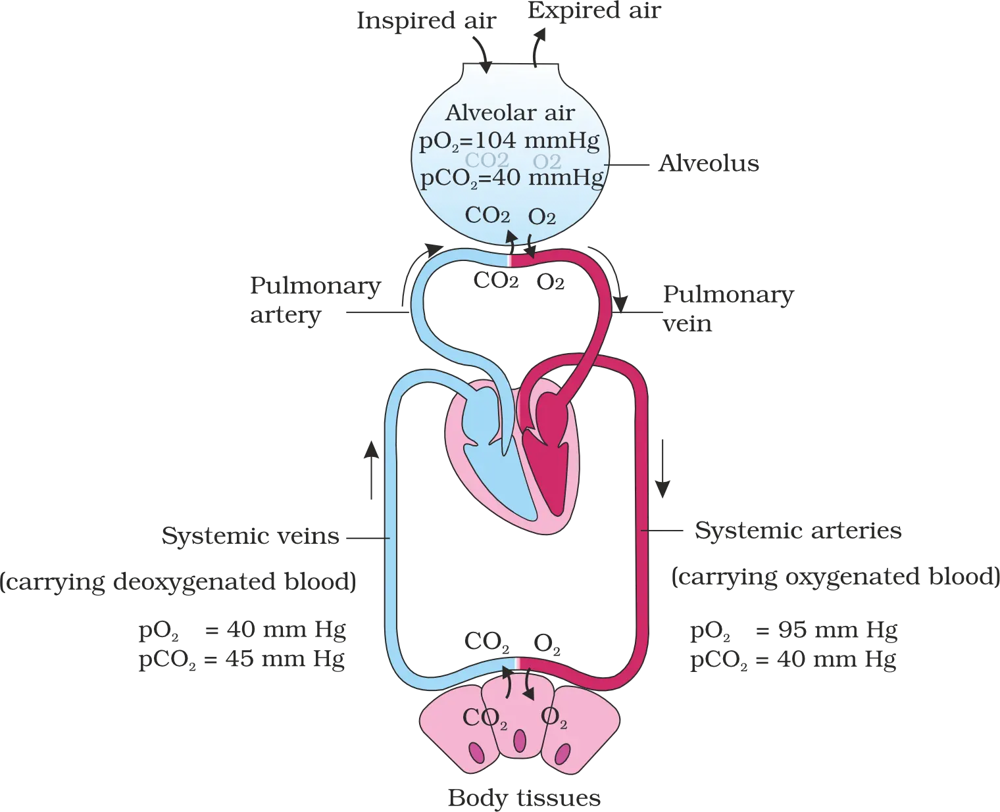
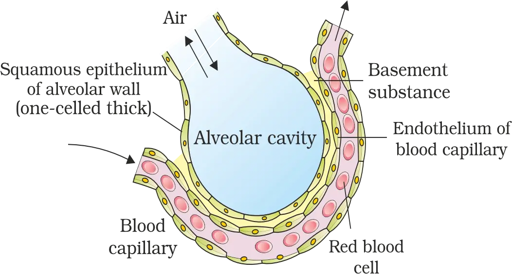
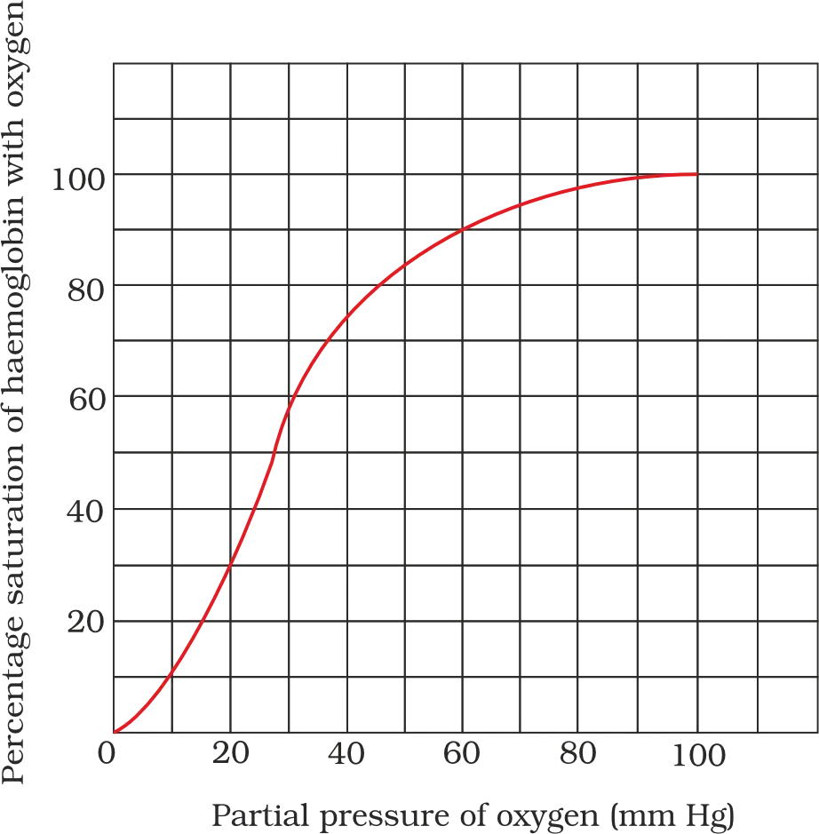

Ch-14 : Breathing and Exchange of Gases
Unit 5: Human Physiology (Systems Biology Perspective)
From “parts” to “systems”
⚠ Don’t overcommit to one lens: studying only the whole organism OR only molecules can miss key explanations.
Think: knowing every instrument ≠ automatically understanding the “music” — interactions create the full effect.
Systems Biology & Emergence
Moleculesregulatory networks, signaling
Supramolecular assemblieslarge functional complexes
Cellscellular interactions
Tissuescoordinated tissue-level function
Organismsintegrated body functions
Populations & communitiesecological interactions
Components
→Interactions
→Regulatory networks
→Emergent properties
- Early focus: explain processes via cells + molecules (mechanisms).
- Later focus: how the body achieves coordination + regulation at the whole-organism scale.
Biographical Note: Alfonso Corti (1822–1888)
Who he was & what he discovered
Sound vibrations
→Hair cells (organ of Corti)
→Nerve impulses
The organ of Corti is basically the ear’s “translator”: vibration signals → electrical messages for the brain.
Chapter 14: Breathing and Exchange of Gases
Why organisms need breathing (respiration)
O2 supply must be continuous
→
CO2 release must be continuous
14.1 Respiratory Organs (across animal groups)
- Habitat (aquatic vs terrestrial)
- Level of organisation (simple body plan vs complex organ systems)
Body surface diffusionsponges, coelenterates, flatworms (simple diffusion over entire body surface)
Moist cuticleearthworms (gas exchange through cuticle)
Tracheal tubesinsects (tube network transports atmospheric air within body)
Gillsaquatic arthropods & molluscs; also fishes (branchial respiration)
Lungsterrestrial forms; amphibians, reptiles, birds, mammals (pulmonary respiration)
Moist skinfrogs also use skin (cutaneous respiration)
- Branchial respiration = gills
- Pulmonary respiration = lungs
- Cutaneous respiration = skin (not “lungs through skin”)
14.1.1 Human Respiratory System (structure and divisions)

External nostrils
→
Nasal passage
→
Nasal chamber
→
Pharynx
→
Larynx
→
Trachea
Right primary bronchus
→
Secondary bronchi
→
Tertiary bronchi
→
Bronchioles
→
Terminal bronchioles
→
Alveoli
Pharynxcommon passage for food and air
Larynxcartilaginous box; helps in sound production → “sound box”
Epiglottisthin, elastic, cartilaginous flap; covers glottis during swallowing → prevents food entry into larynx
- Trachea, primary/secondary/tertiary bronchi, and initial bronchioles are supported by incomplete cartilaginous rings.
- Very thin, irregular-walled, vascularised bag-like structures
- Arise from terminal bronchioles
- Key exchange units
Pleura and pleural fluid
- Pleural fluid reduces friction on lung surface during breathing movements
- Outer pleural membrane → close contact with thoracic lining
- Inner pleural membrane → in contact with lung surface
Conducting part vs respiratory (exchange) part
Conducting part
External nostrils → terminal bronchioles
→
External nostrils → terminal bronchioles
Respiratory / exchange part
Alveoli + their ducts
Alveoli + their ducts
- Transports atmospheric air to the alveoli
- Clears air of foreign particles
- Humidifies the air
- Brings air to body temperature
- Actual diffusion of O2 and CO2 between blood and atmospheric air
Thoracic chamber and its role in breathing
Dorsalvertebral column
Ventralsternum
Lateralribs
Lower sidedome-shaped diaphragm
Change in thoracic cavity volume
→
Change in lung (pulmonary) cavity volume
Steps of respiration (full sequence)
- Breathing / pulmonary ventilation: atmospheric air drawn in; CO2-rich alveolar air released out.
- Diffusion of gases (O2, CO2) across the alveolar membrane.
- Transport of gases by the blood.
- Diffusion of O2 and CO2 between blood and tissues.
- Utilisation of O2 by cells for catabolic reactions + release of CO2 (cellular respiration).
14.2 Mechanism of Breathing (pressure gradients and muscles)
Inspirationatmospheric air is drawn in
Expirationalveolar air is released out
- Inspiration when intra-pulmonary pressure < atmospheric pressure (negative pressure relative to atmosphere)
- Expiration when intra-pulmonary pressure > atmospheric pressure
Diaphragmprimary muscle; changes thoracic volume
External intercostalsbetween ribs; aid inspiration
Internal intercostalsbetween ribs; involved in generating gradients (specialised set)
- Diaphragm contracts → increases thoracic chamber volume in the antero-posterior axis
- External intercostal muscles contract → lift up ribs → further increases thoracic volume
Mechanism of Breathing (Inspiration & Expiration)

Think: Air = “moves down a pressure slope”. Your chest changes size first, then lung pressure changes, then air follows.
Inspiration (breathing in)
Diaphragm contracts
→
Thoracic volume increases
→
Pulmonary volume increases
→
Intra-pulmonary pressure falls below atmospheric pressure
→
Air moves into lungs
- Diaphragm contraction increases thoracic volume.
- Inter-costal muscles contract, raising the sternum, increasing thoracic chamber volume in the dorso‑ventral axis.
- Air enters because intra‑pulmonary pressure becomes less than atmospheric pressure.
Expiration (breathing out)
Diaphragm & inter-costal muscles relax
→
Diaphragm & sternum return to normal position
→
Thoracic & pulmonary volumes decrease
→
Intra‑pulmonary pressure rises slightly above atmospheric
→
Air is expelled
- Inspiration: intra‑pulmonary pressure < atmospheric
- Expiration: intra‑pulmonary pressure > atmospheric (even if only slightly)
Forceful breathing & breathing rate
- Force of inspiration/expiration can be increased using additional abdominal muscles.
- Normal breathing rate: about 12–16 breaths/minute in a healthy human (average).
Spirometer (clinical estimation of air volumes)
Respiratory Volumes and Capacities
Respiratory Volumes (basic components)
Tidal Volume (TV)Air inspired/expired in normal respiration; ~500 mL
Inspiratory Reserve Volume (IRV)Extra air inspired by forcible inspiration; ~2500–3000 mL
Expiratory Reserve Volume (ERV)Extra air expired by forcible expiration; ~1000–1100 mL
Residual Volume (RV)Air remaining after forcible expiration; ~1100–1200 mL
Pulmonary Capacities (derived by adding volumes)
Exchange of Gases

Factors affecting diffusion of O2 and CO2
- Pressure/concentration gradient (major driver)
- Solubility of gases
- Thickness of the diffusion membranes
Partial pressure (pO2, pCO2)
- Oxygen: pO2
- Carbon dioxide: pCO2
- Atmospheric air: pO2 = 159 mm Hg; pCO2 = 0.3 mm Hg
- Alveoli: pO2 = 104 mm Hg; pCO2 = 40 mm Hg
- Blood (deoxygenated): pO2 = 40 mm Hg; pCO2 = 45 mm Hg
- Blood (oxygenated): pO2 = 95 mm Hg; pCO2 = 40 mm Hg
- Tissues: pO2 = 40 mm Hg; pCO2 = 45 mm Hg
O2: Alveoli (104)
→
Blood (40)
→
Tissues (40)
CO2: Tissues (45)
→
Blood (45→40)
→
Alveoli (40)
Why CO2 diffuses efficiently despite smaller gradient
Diffusion membrane (structure and thickness)

Alveolar epitheliumThin squamous epithelium of alveoli
Capillary endotheliumEndothelium of alveolar capillaries
Basement substanceThin basement membrane supporting alveolar epithelium + basement membrane around endothelial cells
- O2: alveoli → tissues
- CO2: tissues → alveoli
- O2: alveoli → blood → tissues
- CO2: tissues → blood → alveoli
Transport of Gases
Overall transport proportions (must-know values)
O2 via RBCs~97% transported by RBCs (as Hb-bound)
O2 via plasma~3% dissolved in plasma
CO2 via RBCs~20–25% transported by RBCs
CO2 as bicarbonate~70% carried as bicarbonate
CO2 dissolved~7% dissolved in plasma
Transport of Oxygen
- Carrying capacity: each Hb molecule can carry a maximum of 4 O2 molecules.
- Hb–O2 binding is primarily related to pO2.
- Other factors that interfere with binding: pCO2, H+ concentration, and temperature.
Think “Hb is a reversible taxi”: it loads O2 where pO2 is high (lungs) and drops it where pO2 is low (tissues).
Oxygen dissociation curve (sigmoid curve)

Lungs: O2 binds Hb
→
Blood transports oxyhaemoglobin
→
Tissues: O2 dissociates
Transport of Carbon dioxide
- CO2 binding to Hb (carbamino‑haemoglobin) is related to pCO2.
- pO2 is a major factor affecting this binding.
- Tissues: high pCO2 + low pO2 → more CO2 binding.
- Alveoli: low pCO2 + high pO2 → CO2 dissociation.
CO2 Transport: Release at Alveoli & Role of Carbonic Anhydrase
At Tissue Site (High pCO2)
High tissue pCO2
→
CO2 diffuses into blood (plasma + RBC)
→
CA drives formation of HCO3− + H+
- Net effect: CO2 becomes “trapped” largely as bicarbonate (HCO3−) for transport in blood.
At Alveolar Site (Low pCO2)
Low alveolar pCO2
→
HCO3− + H+ recombine
→
H2CO3 → CO2 + H2O
→
CO2 diffuses into alveoli and is exhaled
Regulation of Respiration
Respiratory Rhythm Centre (Medulla)
Pneumotaxic Centre (Pons)
Chemosensitive Area (Adjacent to Rhythm Centre)
- CO2
- H+ (hydrogen ions)
↑ CO2 and/or ↑ H+
→
Chemosensitive area activated
→
Signals rhythm centre
→
Breathing adjusted to eliminate CO2/H+
Peripheral Receptors: Aortic Arch & Carotid Artery
- CO2 concentration
- H+ concentration
Disorders of Respiratory System
Asthma
⚠ Don’t mix it up: asthma is mainly about inflamed/narrowed airways (bronchi/bronchioles), not damaged alveoli.
Think of the airways like a “squeezed” straw → air struggles to move → you hear wheezing.
Emphysema
Imagine popping the tiny “bubble walls” of alveoli → fewer separate bubbles = less surface area for gas exchange.
Occupational Respiratory Disorders
Long-term dust exposure
→
Inflammation
→
Fibrosis (proliferation of fibrous tissue)
→
Serious lung damage
⚠ Key idea: it’s the long-term exposure that drives fibrosis and lasting damage.
Chapter Wrap-Up: What You Must Be Able to State (from the Summary)
Overall Purpose & Steps in Respiration
- Transport of O2 to cells
- Removal of CO2 from cells
BreathingInspiration (air in) + Expiration (alveolar air out)
Alveoli ↔ Blood exchangeO2 into blood; CO2 into alveoli
Transport by bloodGases carried throughout body
Blood ↔ Tissues exchangeO2 to tissues; CO2 to blood
Cellular respirationCells utilise O2
Mechanism of Inspiration/Expiration & Spirometry
- Intercostal muscles
- Diaphragm
Pressure gradient = “air moves from higher pressure to lower pressure” (like air rushing out of a squeezed balloon).
Diffusion of Gases: Determinants
- Partial pressure gradients of O2 (pO2) and CO2 (pCO2)
- Solubility of the gases
- Thickness of the diffusion surface
- O2: alveoli → deoxygenated blood; oxygenated blood → tissues
- CO2: tissues → alveoli (opposite direction)
⚠ Common slip: the direction is set by partial pressure gradients, not “where there is more oxygen in general.”
Transport of O2
- At alveoli (high pO2): O2 binds haemoglobin.
- At tissues (low pO2, high pCO2 and high H+): O2 dissociates from haemoglobin.
Alveoli: high pO2
→
Hb loads O2
→
Tissues: low pO2, high pCO2/H+
→
Hb unloads O2
Transport of CO2
~70% as HCO3−via carbonic anhydrase
20–25% as carbamino-HbCO2 bound to haemoglobin
- At tissues (high pCO2): At tissues, CO2 enters the blood and is transported mainly as bicarbonate and partly as carbamino-haemoglobin.
- At alveoli (low pCO2 and high pO2): CO2 is removed/unloaded from blood.
Tissues: high pCO2
→
CO2 loads into blood
→
Alveoli: low pCO2, high pO2
→
CO2 unloads to alveoli
Neural Control Centres (Recap)
- Respiratory centre (medulla): maintains respiratory rhythm
- Pneumotaxic centre (pons): alters/moderates respiratory mechanism (reduces inspiration duration)
- Chemosensitive area (medulla, adjacent): responds strongly to CO2 and H+
MPC